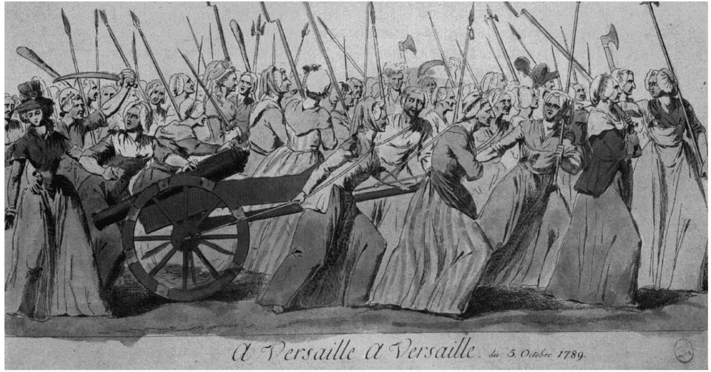
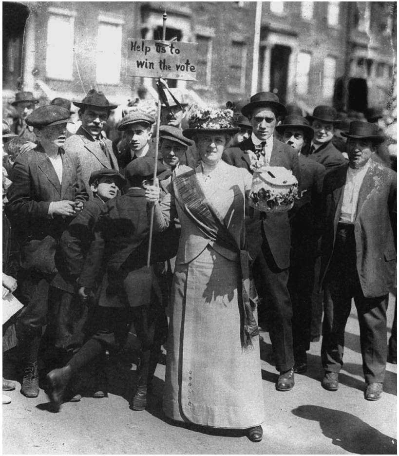

妇女在所有的政治革命中都扮演了一个积极的角色，但结果却是有好有坏的。基本原因在于，女性没有坚持要求革命纲领正式接受和体现她们的需求。相反，她们满足于做男性控制的政治运动中的辅助者。在权力斗争中，她们的支持当然是受欢迎的，但在赢得胜利之后，她们即被忽略了，并被迫回到革命前的从属地位。这一模式在从17世纪的英国革命到20世纪的俄国和中国革命的所有现代革命中都表现得很明显。

图201 1789年10月5日，巴黎妇女们向凡尔赛宫进军。第二天，王室被迫和她们一道回到巴黎。此后，法国政府将在乱民暴动的持续威胁下开展工作。
法国革命的各个阶段清楚地表明了这一模式是如何形成的。革命之前，法国妇女和全欧洲的妇女一样，婚前接受父权，婚后接受夫权。孔多塞侯爵是法国革命领导人中为数不多的公开主张女性应该拥有与男子相同的财产权、投票权、工作权以及接受公共教育权的人之一。但是，侯爵的思想超越了他那个时代。人们更容易接受卢梭的观点：卢梭在他的《社会契约论》中阐述了进步的政治观点，但在他的小说《爱弥儿》（1761年）中，他却建议女人“衣着俭朴，在家中辛勤劳作，永远不要到需要讲话的公众集会上去……世界上还有什么别的情景比一位母亲被孩子们围着、指挥用人干活、为丈夫谋得幸福生活、把家收拾得井井有条更感人、更让人尊敬呢？”
革命开始时，中产阶级的妇女向三级会议提出了她们的书面要求。她们要求确保妇女的嫁妆不被丈夫肆意挥霍，确保妇女不遭受丈夫虐待，要求国家为因经济贫困而卖身的妇女提供工作，要求建立为妇女增加就业机会的公共教育制度。但是，妇女没有将她们的要求坚持到底，因此，1789年8月26日国民会议通过的《人权宣言》没有提到妇女的权利。工人阶级妇女则更强硬，因为巴黎没有面包，她们在挨饿。1789年10月，她们向凡尔赛宫进军，并将王室带回巴黎，称他们是“面包师、面包师的妻子和面包师的孩子”。
到1790年时，妇女们已在出版自己的报纸，要求获得选举权、参加集会的权利、担当法官的权利和提出离婚的权利。这些要求被包含在1791年由妇女领导人公布的《女权宣言》中。1793年春天，当国王以叛国罪被处死、法国遭到5支外国军队入侵时，女性表现得最为活跃。处于困境的巴黎政府号召妇女参加保卫祖国的斗争。她们热烈响应，在医院里卷绷带，为士兵们制作衬衫、长裤、帽子、袜子、手套。一些人甚至自愿参加了革命军队的战斗。
共和政府为此表示感谢，通过了一系列法律：使离婚合法化，使婚姻成为公民的契约，承认妻子拥有一部分家庭财产，为女孩和男孩提供免费的小学义务教育。在其活动鼎盛时期，“共和国革命妇女”的成员穿着长裤，腰间别着手枪，头上戴着红帽，在街上游行。
一年后，当外国入侵的危险过去之后，对妇女革命者的反击又开始了。一个具体的事件是结束物价控制，减少面包配额。工人家庭在受苦，而牟取暴利者却在炫耀他们新获得的财富。当成千上万的绝望男女拿起武器时，会议召集了正规军并包围了起义的街区。1793年的民主宪法被废止了，刚刚授予妇女的大多数权利也被废止了。拿破仑通过在他的《法典》中重新恢复父亲和丈夫的绝对权威巩固了这一反击。
出现反复的根本原因是，女权事业在妇女自身中缺乏群众的支持。革命期间，她们主要是对自己阶级的需求而不是对自己性别的需求作出反应。她们上街游行主要是为了社会改革和经济救济，而不是为了女性的权利。当法国革命和在此之前的英国革命一样拒绝社会重组和转向保守之后，妇女作为女性所获得的利益随着她们作为工人所获得的利益一起被冲走了。除孔多塞外，革命的高层领导人都全力拥护卢梭的主张，认为妇女应待在家里。他们承认并称赞妇女在革命中所做的贡献，但是，革命结束后，这些政治领导人又发表演说，认为将来妇女的贡献应在家里，而不是在外面。
法国革命期间形成的女权主义主题在革命后并未被忘记。整个19世纪，欧洲的中产阶级和上层阶级妇女恢复了这些主题。女权主义运动的领袖出版了自己的书籍杂志，建立了国内和国际妇女联合会的网络。这些组织提倡妇女的教育，反对国家控制的娼妓制度，援助孤儿和未婚母亲，反对酗酒，发起和平运动，称战争是男人政治最终的表达方式。因为其进展微乎其微，在19世纪后期，女性运动的积极分子得出结论：除非妇女在平等的基础上与男性享有相同的政治权力，她们的目标就无法实现。从此，选举权成为所有国家主张妇女应有参政权者的一个主要问题。这一问题在20世纪取得快速发展，以致妇女享有选举权的国家从1900年的1个增加到1910年的3个、1920年的15个、1930年的21个、1940年的30个、1950年的69个、1960年的92个、1970年的127个和1975年的129个。

图202 早期女权主义运动的成员——20世纪初的一位妇女参政论者。
选举权并不像预想的那样是解决妇女问题的万应灵药。在投票日投下的一票并不会自动授予政治权力。几乎没有妇女被选入代表机构，最终在行政当局谋得职位的妇女就更少。事实上，国际妇女运动在赢得选举权后活力大减。这种停滞状态一直持续到“二战”，当时几个具有决定性的新因素结合在一起，给女权运动注入了活力。这些新因素的起源和性质以及它们对全球妇女的影响，将在本书最后一章进行分析。
[推荐读物]
比较和解释英国革命、法国革命和俄国革命的著作有C. Brinton所著的The Anatomy of Revolution（兰登书屋，1958）和R. W. Postgate所著的阅读材料集Revolution from 1789 to 1906（Harper & Row出版社，1962）。
关于英国革命，见P. Zagorin所著的A History of Political Thought in the English Revolution（Routledge & Kegan Paul出版社，1954）和C. Hill的研究Intellectual Origins of the English Revolution（Clarendon出版社，1962）和The World Turned Upside Down：Radical Ideas During the English Revolution（Viking出版社，1972）。关于启蒙运动，见R. B. Mowat的概述The Age of Reason（Houghton Mifflin出版社，1934）；E. Cassirer所著的The Philosophy of the Enlightenment（Princeton University出版社，1951）和F. E. Manuel编著的文件集The Enlightenment（Prentice Hall出版社，1965）。
研究美国革命的著作有：P. Maier所著的From Resistance to Revolution（Routledge & Kegan Paul出版社，1973）；L. H. Gipson所著的The Coming of the Revolution，1763-1775和J. R. Alden所著的The American Revolution，1775-1783，后两部著作见“New American Nation”丛书（Harper & Row出版社，1954）。关于美国革命对欧洲的影响，见M. Kraus所著的The North Atlantic Civilization（D. Van Nostrand出版社，1957）和G. D. Lillibridge所编的The American Image Past and Present（D. C. Heath出版社，1968）。
在论述法国革命的数千册著作中值得注意的有：J. M. Thompson所著的The French Revolution，2nd ed.（Blackwell出版社，1966）和J. H. Stewart所著的阅读材料集A Documentary Survey of the French Revolution（Macmillan出版社，1951）。R. R. Palmer所著的The Age of the Democratic Revolution：A Political History of Europe and America，1760-1800，2vols.（Princeton University出版社，1959，1964）对分析1760年到1800年间西方世界的革命运动具有特殊意义。更新的研究有：O. Connelly所著的French Revolution——Napoleonic Era（Holt，Rinehart & Winston出版社，1979）；L. Hunt所著的Politics，Culture and Class in the French Revolution（University of California出版社，1986）和G. Rude所著的The Crowd in History：Popular Disturbances in France and England（Lawrence and Wishart出版社，1981）。
现有论述民族主义的多卷本文献问世，较综合地概述这一问题的著作有：B. C. Shafer所著的Nationalism：Myth and Reality（Harcourt Brace Jovanovich出版社，1955）和K. R. Minogue所著的Nationalism（Basic Books出版社，1967）。关于自由主义的书目也很多，尽管综合性研究的著作几乎没有。其中著名的著作有：H. J. Laski所著的The Rise of Liberalism（Harper & Row出版社，1936）；J. R. Pennock所著的Liberal Democracy：Its Merits and Prospects（Holt，Rinehart & Winston出版社，1950）；J. Sigmann所著的1848： The Romantic and Democratic Revolutions in Europe（Harper & Row出版社，1973）和J. S. Schapiro的附带阅读材料的简要综述Liberalism：Its Meaning and History（D. Van Nostrand出版社，1958）。
关于社会主义的著作层出不穷，多数作品都充满争议。最近的有：D. McLellan所编的对马克思影响的评价Marx：The First Hundred Years（St. Martin’s出版社，1983）；A. S. Lindemann所著的A History of European Socialism（Yale University出版社，1983）；T. Bottomore所编的有用的参考书A Dictionary of Marxist Thought（Harvard University出版社，1983）和C. Wright Mills所著的平装本相关阅读材料集The Marxists（Dell出版社，1982）。
最后，关于女性作用的总体看法，见R. Bridenthal和C. Koonz所著的Becoming Visible：Women in European History（Houghton Mifflin出版社，1977）的相关章节。更详细地论述这一点的著作有： R. J. Evans所著的The Feminists：Women’s Emancipation Movements in Europe，America and Australia 1840-1920（Barnes & Noble出版社，1978）；P. Stock所著的Better Than Rubies：A History of Women’s Education（Putnam’s出版社，1978）；C. Banks所著的Faces of Feminism：A Study of Feminism as a Socail Movement（Oxford University出版社，1981）和J. Kelly所著的Women，History and Theory（University of Chicago出版社，1985）。
[注释]
[1]Cited by G. Wint, The British in Asia（Institute of Pacific Relations，1954）, p. 18.
[2]Sir Edwin Sandys，in a speech in Parliament. Cited by J. L. Laski, The Rise of Liberalism（Harper & Row，1936）, p. 117.
[3]P. Zagorin, “The English Revolution，1640-1660，” Journal of World History, II （1955）, p. 903.
[4]A. S. P. Woodhouse, Puritanism and Liberty（Dent，1938）, p. 55.
[5]T. Kolokotrones and E. M. Edmonds, Kolokotrones，Klepht and Warrior（London，1892）, pp. 127-128.
[6]B. C. Shafer, Nationalism：Myth and Reality（Harcourt Brace Jovanovich，1955）, p. 105.
[7]Cited by D. W. Morris, The Christian Origins of Social Revolt（George Allen & Unwin，1949）, p. 34.